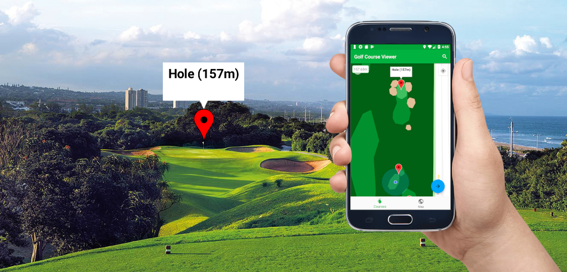

Bring your golf course to the world by mapping it out with the Golf Course Mapper! Create your holes and draw your fairway, green and hazards. Mark your teeing location, hole and any other points of interest for players, such as the good ol' 19th hole!
Players using our Golfer's Guide mobile app will find your course and look at the map as they are playing. This will help your players to truly improve their swing!
Get the Golfer's Guide Android app, now available on the Google Play Store!
